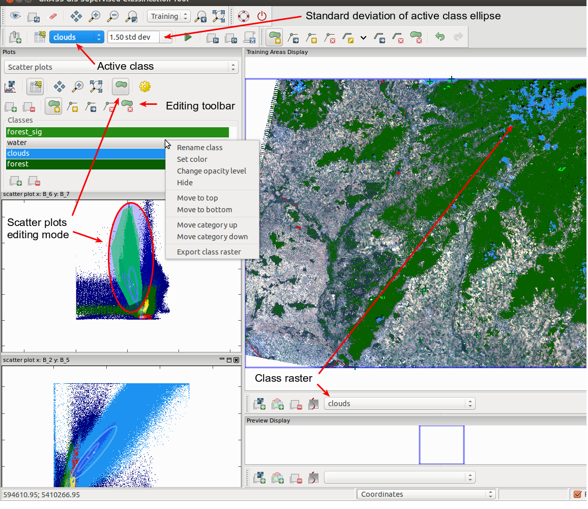

DESCRIPTION
Interactive Scatter Plot Tool allows to analyze group of raster maps.
The tool is integrated into
Supervised Classification Tool (wx.iclass) (see the screen shot bellow).
Also it is possible to launch it from Map Display Window
(Analyze map → Interactive Scatter Plot Tool).
The main idea of the tool is that everything is linked together
(scatter plots together and mapwindow with the scatter plots).
The main feature of the tool is the interactivity, which allows user to:
- work with multiple plots, which represents multiple raster bands combinations.
- highlight plotted points in open scatter plots according to currently
chosen pixels for classes by it's training areas (supported only in wx.iclass)
- be able to define areas in plots and the tool will highlight pixels in
map display window and corresponding points in other plots
- plot of confidence ellipses
TOOL CONTROLS LAYOUT

If editing mode is activated (the green polygon tool in toolbar), the areas which were selected
in the scatter plots are highlighted. In the image you can see this area for scatter plot of bands B_6 B_7 inside the ellipse.
Opacity and color of the selected area can be set in settings. The area corresponds to the active class (in this case clouds).
Selected areas are subset of areas, which belongs to the category.
In the editing mode it is possible to select certain area by the polygon, which can be created and edited by tools in editing toolbar.
After the area is selected, we can include or exclude it into active category by clicking on the first (plus) respectively
second (minus) tool in the editing toolbar. In mapwindow corresponding pixels are shown by the class raster representing
selected areas in scatter plots. In this case we can see clouds class raster (blue), forest class raster (green) and
water class raster (red).
NOTES
The tool can analyze only integer (CELL) rasters.
It works with 8 bit range smoothly.
The tool is capable of processing data up to 12 bit range, however it is not recommended open many scatter plots in 12/11 bit mode.
It could require significant amount of memory and plot rendering time can be longer.
Analyzing of raster data with higher range is not recommended.
The raster range can be lowered using r.rescale.
KNOWN ISSUES
Selection of areas in mapwindow is currently supported only if the tool was launched from
Supervised Classification Tool (wx.iclass)
SEE ALSO
wxGUI
wxGUI components
r.rescale
See also the
user wiki
page.
AUTHOR
Stepan
Turek, Google
Summer of Code 2013 (mentor: Martin Landa)
$Date$